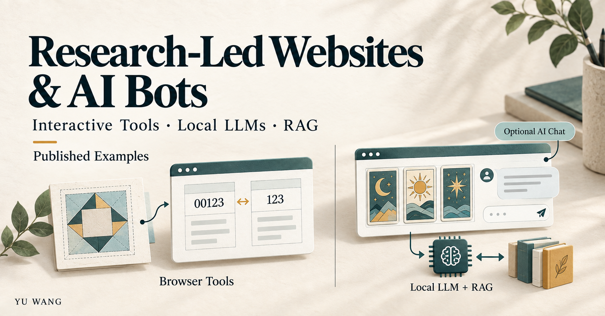

05 / Public examples · In progress
Research-Led Websites, Interactive Tools & Local AI
Turning researched user problems into useful web interactions, with deterministic tools and a separate local LLM/RAG tarot application.

Research that changes the interface
I start with a concrete problem: a long identifier that a spreadsheet changes, a quilting dimension that needs to be calculated backwards, or a recipe that needs a different pan size.
The resulting tools make inputs, assumptions, calculation steps and limitations visible. Worked examples help users understand a result before applying it to their own data.
Deterministic tools
- CSV Integrity Lab: exact-text comparison for leading zeros, long identifiers and other differences between displayed and original values. It does not reconstruct digits that have already been lost.
- Quilt Square Lab: reverse calculations for quilting dimensions, supported by geometric explanations, seam allowances and cutting information.
- Pan Ratio Lab: pan-size conversions with explicit dimensions, units and assumptions.
The calculation and comparison logic in these tools is deterministic. AI assistance during development does not make their results model-generated.
Optional local AI for a tarot reading
The tarot site offers a separate application of local language models and retrieval-augmented generation. Card drawing and the initial rule-based interpretation happen in the frontend. After the user gives consent, the site can add an optional AI reading or answer follow-up questions about that fixed draw.
The optional AI feature currently supports Traditional Chinese and depends on the local backend being available. English, Spanish and Hindi offer fixed card meanings and reflection prompts; they do not claim the same free-text interpretation or AI support as the Chinese flow.
The integration uses a local model with a retrieval layer. My portfolio describes the application flow and integration work; it does not expose internal network details or treat every generated answer as verified.
Content and measurement
SEO, AEO and GEO research informs answer-first explanations, readable HTML and worked examples. The websites provide Traditional Chinese, English, Spanish and Hindi pages with language-specific content and crawlable language links.
Measurement separates sample interactions from meaningful tool use, while search visibility is observed separately. The public interfaces and historical integration checks provide development evidence. Search performance and answer quality remain subjects of ongoing evaluation.
Current stage
In progress
Public examples are available, with further evaluation in progress. Calculations can be checked against explicit rules and examples. The optional tarot AI requires a separate assessment of retrieval, responses and user experience. Its recorded integration work used synthetic scenarios, which do not establish broad answer-quality or usage outcomes.